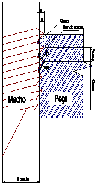

LMP>Research Guidelines>FURCON>Form Threading
OBJECTIVESThe objective of this work is to study the form threading process fundaments through assays results analysis, verifying the influence of several factors going on the process. The form threading of flowed bushing satisfactorily replaces, in many cases, the use of weld nut and other threading applications, on sheet. The form threading process characteristics depend on work variables
and input applied parameters. As main variables there are form speed and
hole initial diameter.
The parameters are tool diameter, plate thickness, plate material, thermal
conductivity, strain resistance, tool material and applied lubricant.
The process characteristics are evaluated basically by torsion moment and
by
the produced fillet shape. RESULTSThe work results are evaluated by threads dimensions, surface quality and resistance and also by tool wear. At last all factors must be evaluated in terms of productivity and costs in order to verify the process economical viability. The main advantages of this process are:
 |
| Contact: FURCON Walter Lindolfo Weingaertner Prof. Dr.-Ing |
Last update 06.07.2006 |